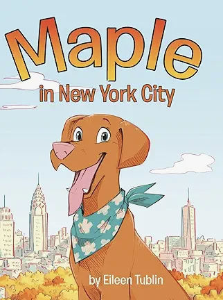
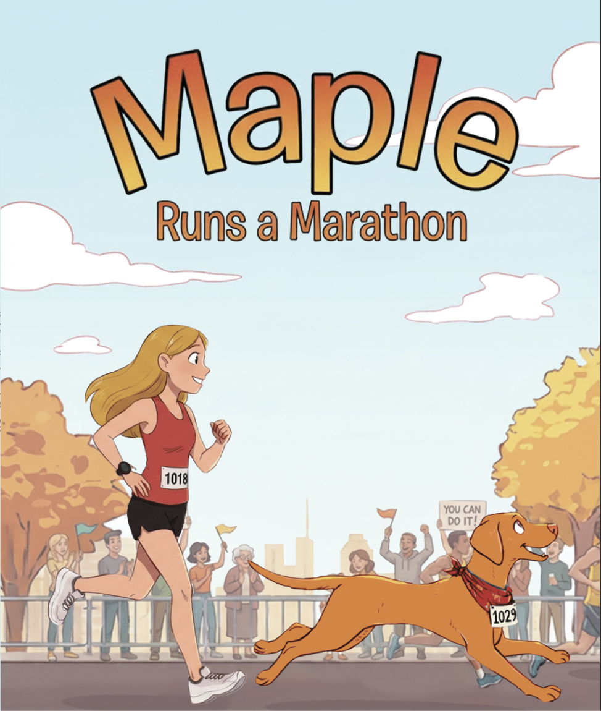

Building, writing, and creating things that bring people together.

A gentle, heart-forward story about curiosity, courage, and discovering where you belong — told through the eyes of a dog experiencing New York City for the first time.
Ages 3–7 · Paperback
Buy on Amazon
A story about endurance, loyalty, and showing up — even when the road is long. Inspired by real miles, real doubt, and the quiet belief that you don't quit on what you love.
Ages 4–8 · Signed Paperback · $13 + shipping
Order a CopyMaple is the heart and inspiration behind the Maple children's book series.
She's a curious, joyful dog who believes every sidewalk is worth exploring and every mile is an adventure. Whether she's trotting through city streets, watching the world from a park bench, or joining a run along the river, Maple approaches life with enthusiasm, determination, and a wagging tail.
The Maple stories grew from real moments — the walks, runs, and everyday adventures that make life with a dog so special.
Through Maple's eyes, even ordinary days can become unforgettable journeys.
Maple lives in New York City, where every day offers something new to discover. From busy avenues to quiet parks, she loves exploring the city and meeting new people along the way.
She's energetic, curious, and always ready for the next adventure — especially if it involves running.
Maple's personality is what inspired the stories. Her excitement for the world, her determination when things get tough, and her joy in simply being part of the journey became the foundation for the Maple books.
The goal of the series is simple: to share stories that celebrate curiosity, perseverance, and the joy of exploring the world — just like Maple does every day.
The Maple series follows one adventurous dog as she explores the world, faces challenges, and discovers just how exciting life can be. Each story celebrates curiosity, courage, and the idea that big adventures can begin with a single step — or paw.
Maple sets out to explore one of the most exciting cities in the world. From bustling streets to hidden parks, Maple discovers that New York City is full of surprises, new friends, and unforgettable sights.
This playful story celebrates curiosity, exploration, and the magic of seeing the city through a dog's eyes.
Buy Maple in New York CityIn this adventure, Maple takes on her biggest challenge yet — running a marathon. With determination, training, and a little encouragement along the way, Maple learns that big goals are possible when you keep putting one paw in front of the other.
This story celebrates perseverance, resilience, and the joy of crossing the finish line.
Order Maple Runs a MarathonThe Maple stories are about more than just a dog's adventures. They are about curiosity, courage, and the belief that challenges can be overcome one step at a time.
Whether it's exploring a new place or chasing a big goal, Maple reminds readers that the journey itself is part of the adventure.
Hi, I'm Eileen.
I'm a client-focused go-to-market and partnerships leader with experience across fintech and SaaS, specializing in helping companies bring complex products to market and drive meaningful client adoption. My work sits at the intersection of partnerships, product, and customer success — translating between clients, sales, product, and operations to ensure ideas become real solutions that deliver measurable value.
Throughout my career, I've led global GTM and channel programs, supported enterprise deal strategy, and worked closely with SMB and growth-stage companies to implement systems that improve conversion, retention, and long-term growth. I'm especially energized by roles where strong relationships, thoughtful processes, and data-driven decisions come together to solve complicated problems.
Outside of my professional work, I'm a builder and a writer.
I'm passionate about creating tools and platforms that support niche communities — particularly in endurance sports and creative spaces. From building apps to launching new ideas, I love turning concepts into products that connect people around shared passions.
Writing is another important part of my work. I write poetry that explores resilience, honesty, and the quiet determination it takes to keep creating. I'm also the author of a series of children's books inspired by my dog, Maple — stories that celebrate adventure, persistence, and the joy of seeing the world through a dog's eyes.
At the center of everything I do — consulting, writing, product building, and storytelling — is a simple goal: to create things that bring people together and make meaningful experiences possible.